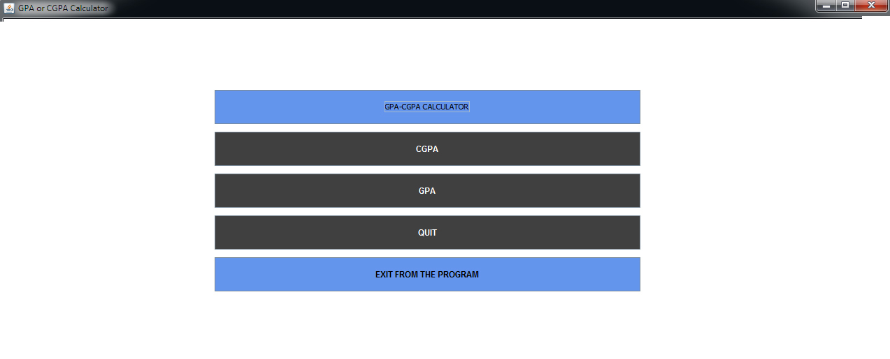

2.3. Choice Interface
2.3.1. Description
The Choice interface offers the end-user to choose the following options:
To calculate Cumulative Grade Point Average (CGPA)
To calculate Grade Point Average(GPA)
To back to the landing interface
To exit from the program
2.3.2. How to use the Choice Menu
Step 1:
To Calculate CGPA- Click the CGPA button
Step 2:
To Calculate GPA- Click the GPA button
Step 3:
To back to the landing interface- Click the QUIT button
Step 4:
To terminate the program- Click the EXIT FROM THE PROGRAM button
2.3.3. Screen of the Choice Interface

Figure 2.3. End user Choice menu of GPA CGPA calculator